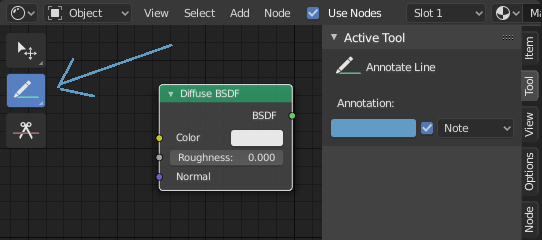

Annotate Tool¶
The annotation tool is available in multiple editors. With it notes can be added to e.g. 3D objects or node setups.
The annotation tool can be activated in the Toolbar on the left side. It has a couple of sub-tools listed below.
- Annotate
- Draw free-hand strokes in the main window.
- Annotate Line
- Click and drag to create a line.
- Annotate Polygon
- Click multiple times to create multiple connected lines. The current polygon is finished when Esc or RMB is pressed.
- Annotate Eraser
Click and drag to remove lines drawn previously.
The eraser has a Radius setting found in .
Settings¶
Common¶
There is a panel, , in it multiple annotation layers can be managed.
- Color
- Adjusts the color of existing and new strokes.
- Thickness
- Adjusts the thickness of existing and new strokes.
- Onion Skin
- Shows a preview of strokes made in frames close by the current frame. Onion skinning only works in the 3D Viewport and Sequencer. See the Grease Pencil documentation for an explanation of Onion Skinning.
3D Editor¶
When creating new annotations in the 3D View, there is one tool setting.
- Placement
The Placement option determines where the line is drawn in 3D space.
- 3D Cursor
- Draw on an imaginary plane that goes through the 3D cursor.
- View
- Draw in screen space instead of in 3D space. That means, that the line will stay on the same position in the screen, even when e.g. the camera rotates.
- Surface
- Project the line on the surface under the mouse.
2D Editors¶
In 2D editors, the Placement option does not exist. When the annotation tool is enabled, the settings for managing multiple layers can be found in the panel in the right Sidebar.

Annotations tool in a node editor.